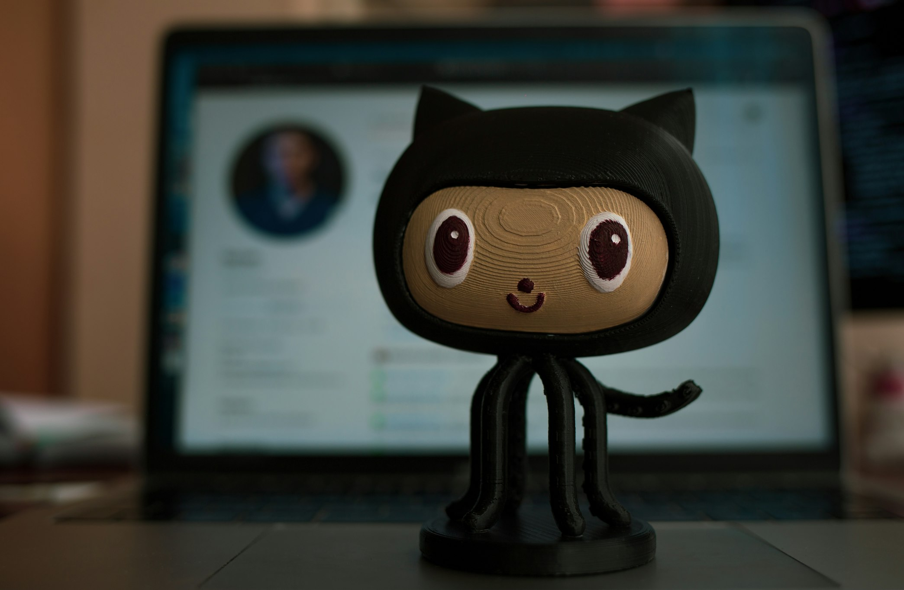
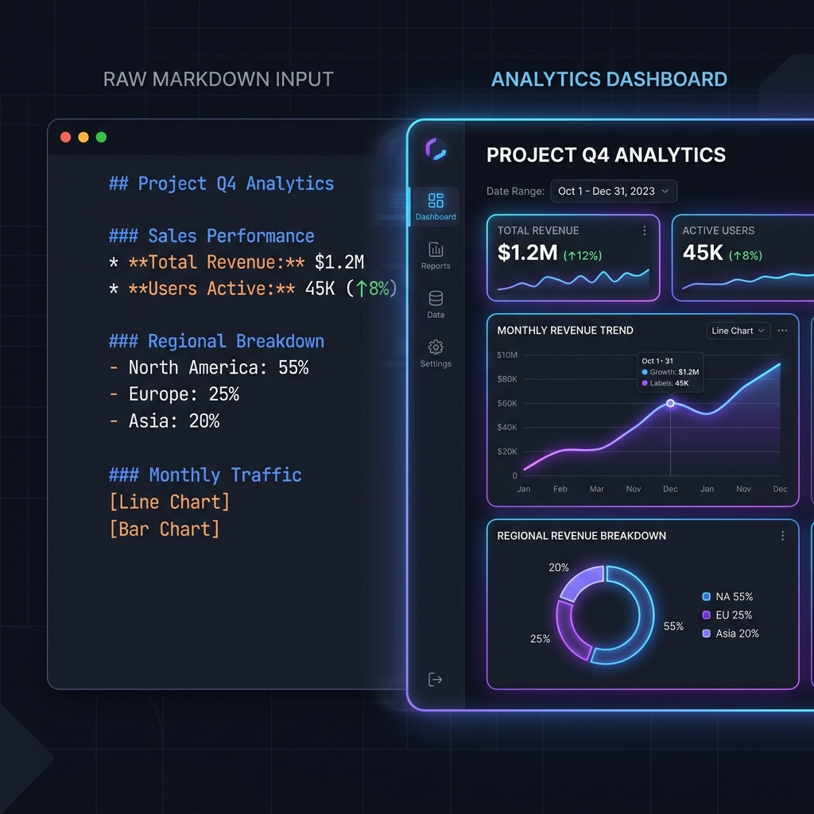
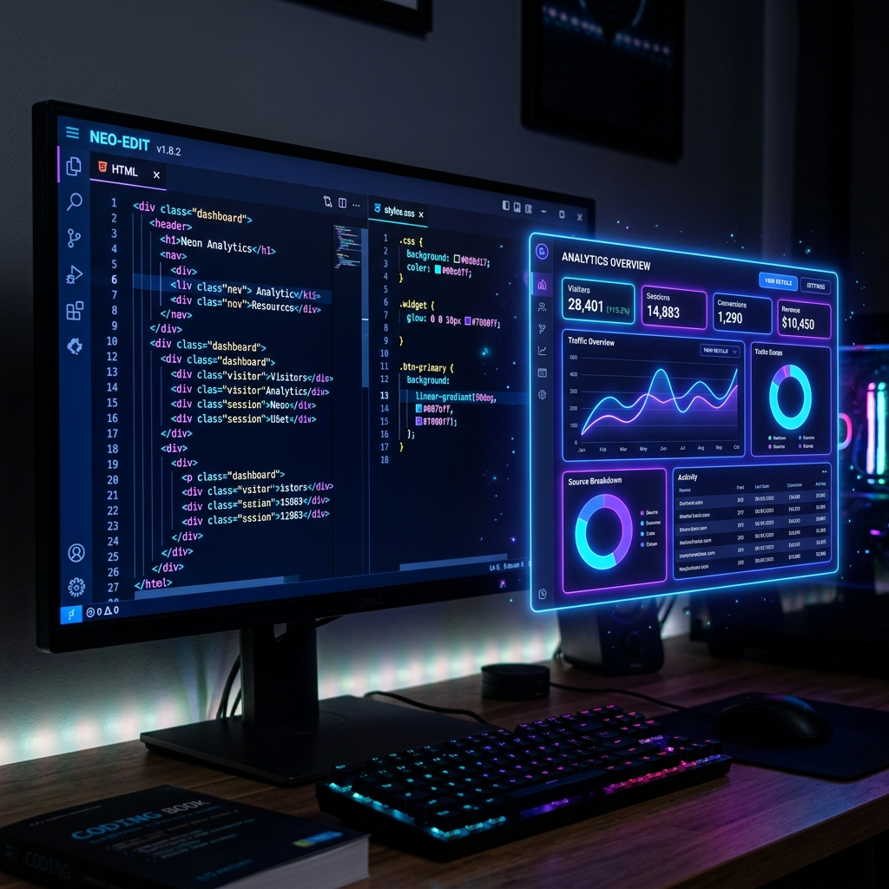

Anthropic 엔지니어 Thariq Shihipar와 Andrej Karpathy가 선언한
'HTML은 AI가 인간에게 쓰는 새로운 언어'

THE PROBLEM
Anthropic Claude Code 팀 엔지니어 Thariq Shihipar는 고백합니다 — "100줄 넘는 마크다운 파일은 나도 안 읽는다. 회사 다른 사람한테 읽으라고 시키는 건 거의 불가능하다."
클로드가 Markdown 안에서 색을 표현하려고 유니코드 문자를 동원하는 장면을 목격해 보셨나요? 도구의 한계 안에서 발버둥 치는 것입니다.
Markdown ≠ 인간의 언어
사람이 사람에게 쓰던 2000년대 포맷.
AI가 쓰기에는 1차선 국도와 같다.

THE SOLUTION
색상, 도표, SVG, 일러스트, 인터랙티브 버튼 — 마크다운이 죽어도 못 하는 것을 HTML은 자유롭게 표현합니다.
탭 구분, 모바일 최적화, 일러스트 삽입 — 사람이 끝까지 읽을 확률이 완전히 달라집니다.
S3에 올리고 링크 하나 던지면 끝. 브라우저에서 바로 열리는 유니버설 포맷.
슬라이더·버튼으로 파라미터를 직접 조작하고, 결과를 Copy → 프롬프트로 다시 AI에게. 마크다운에서는 불가능한 피드백 루프.
로컬 파일, MCP, Slack, Linear 등 외부 데이터를 HTML 한 페이지로 통합 시각화하는 것은 Claude Code만의 무기.
EVOLUTION LAW
"이건 단순 취향이 아니라 AI 진화 법칙이다." — 카파시가 바로 다음 날 날린 동조 트윗.
HOW TO START
"사람들이 /html 같은 스킬을 만들까 봐 걱정된다. 그렇게까지 안 해도 된다. 그냥 시키면 된다."
— Thariq Shihipar

5 SCENARIOS
디자인 옵션 6개를 그리드로 나란히 비교. 트레이드오프 라벨링까지 한 페이지에.
Diff 옆에 위험도별 색상 주석. 동료에게 PR 전달 시 리뷰 수락률이 완전히 달라진다.
슬라이더로 애니메이션 파라미터를 직접 튜닝 → 마음에 드는 값을 Copy as Prompt로 추출.
코드 베이스의 인증 로직을 SVG 다이어그램 포함 HTML 설명서로 즉시 생성. 인수인계에 최적.
Linear 티켓 30개를 NOW·NEXT·LATER·CUT 4칸 드래그 앤 드롭 칸반으로 5분 만에 생성.
DISPOSABLE EDITOR ERA
옛날에는 도구 하나 만들려면 일주일이 걸렸습니다. 지금은 도구 만드는 게 작업보다 빠릅니다.
SaaS 구독료를 결제하거나 내부 개발 리소스를 투입할 필요 없이, 프롬프트를 통해 즉석에서 생성하고 쓰고 버리는 Disposable Tools의 시대.
30개 티켓을 4칸 드래그 앤 드롭. 정리 후 Copy as Markdown으로 추출.
CORE INSIGHT
"예전에는 클로드가 만들어 준 계획을 안 읽기 시작하면서 결국 클로드의 결정을 그냥 따라가게 될 거라고 걱정했었다.
근데 HTML로 바꾸고 나서 나는 그 어느 때보다 더 클로드와 같은 루프 안에 있다."
— Thariq Shihipar, Anthropic Claude Code 팀
AI의 출력을 죽은 텍스트로 두지 마십시오.
살아 움직이는 인터랙티브 도구로 변환하여,
사용자와 AI가 하나의 루프 안에서 즉각적으로 소통하십시오.